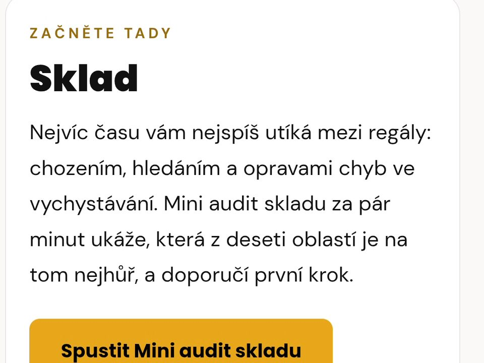
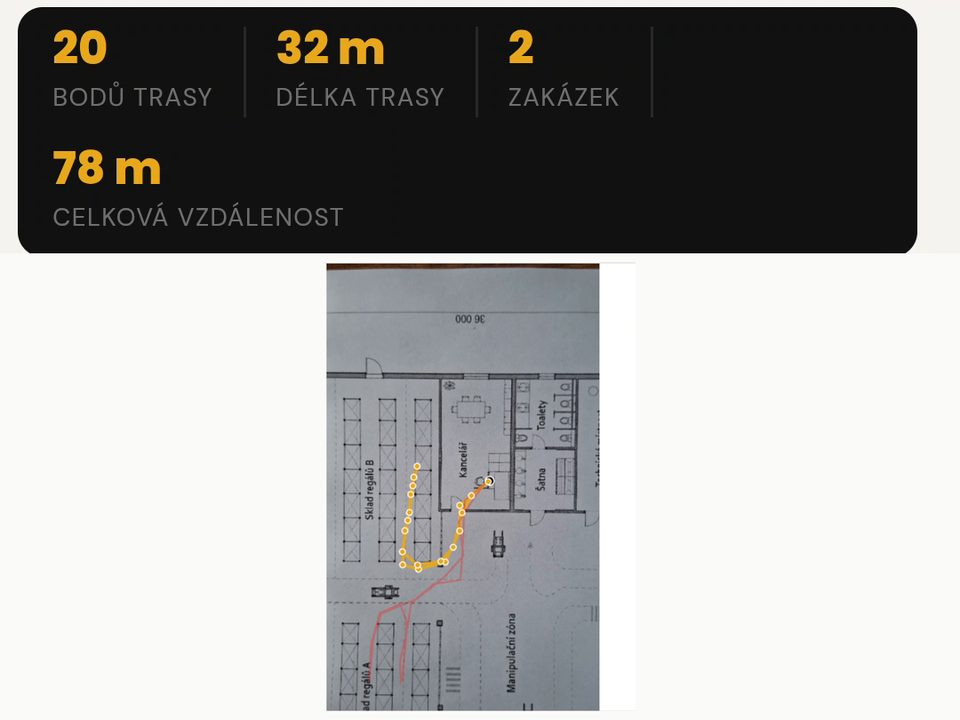
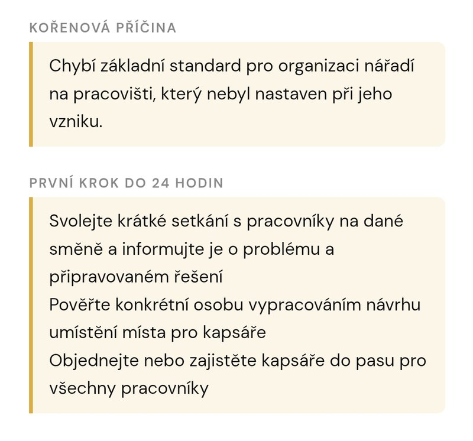
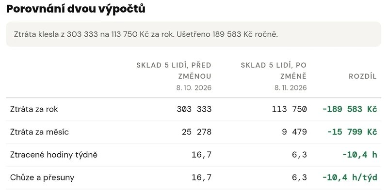
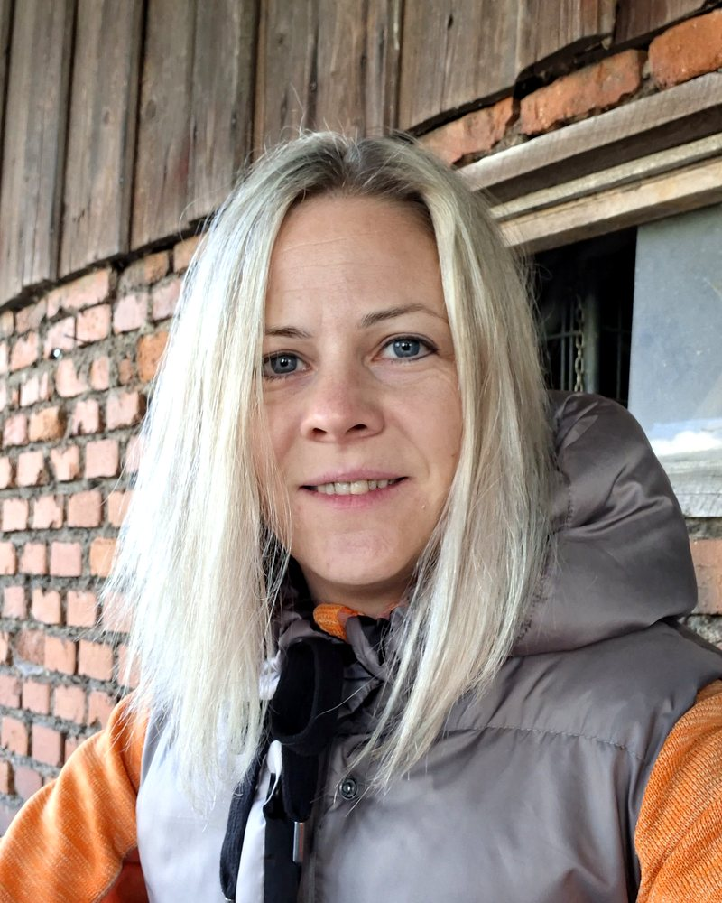

Pro majitele malých výrobních firem, vedoucí skladů a mistry
Zjistěte, kde ve výrobě nebo skladu ztrácíte čas. A co změnit jako první.
Přesčasy, zpožděné zakázky a pocit, že se pořád něco hasí? Často za tím jsou minuty chůze, hledání a čekání, které nikdo nevidí. Webová aplikace Tokva je změří a ukáže, kde začít.
Vyberte, co právě řešíte, a Tokva vám nabídne vhodný první krok. Bez instalace a znalosti metod.
Zdarma a bez platební karty. Výsledky odemknete jedním zadáním e-mailu, z dalších e-mailů se odhlásíte jedním klikem.
U Tokva Pro vrátím peníze, když vám první měsíc nepomůže.
Zrychlená ukázka měření přípravy objednávky.
Poznáváte se?
Chodí se pro věci
Lidé celou směnu chodí pro věci, které by mohly ležet o pár metrů blíž. Chůze není v žádném výkazu.
Hledá se
Materiál, nářadí, doklad, výkres. Pokaždé jen chvilka, ale za směnu se to nasčítá.
Čeká se
Na vozík, na podpis, na jednoho člověka, bez kterého se nepohne nic dalšího.
Chyby se vracejí
Stejná záměna nebo předělávka za měsíc znovu, i když se to už jednou „vyřešilo“.
Tohle většinou není problém lidí. Tohle je problém procesu. A ten se dá změřit.
Kolik vás to stojí? Spočítejte si to s vašimi čísly.
Je to odhad z čísel, která zadáte, ne slib úspory. Počítáme s 21 pracovními dny v měsíci. Kolik to u vás je doopravdy, ukáže měření přímo při běžné práci. Podrobněji podle druhů ztrát spočítá Kalkulačka ztrát.
Od prvního zjištění k řešení. S podporou Tokvy v každém kroku.
Metoda Změř, změň, ověř
Stojí na stejných základech jako Lean a KAIZEN, se kterými zlepšují provoz velké výrobní firmy. Tokva je převádí do jednoduchých kroků, které zvládne mistr bez školení a bez odborných slov. A na rozdíl od většiny postupů nekončí změnou, ale druhým měřením. Uvidíte, jestli změna opravdu zabrala.
Kde začít, Mini audit skladu, Spaghetti diagram a na konci výsledek v korunách. Tak, jak to uvidíte na mobilu.

Tokva vám ukáže, kde začít
Pár jednoduchých otázek o vašem provozu a Tokva doporučí oblast, kterou má smysl řešit jako první.

Tokva vám pomůže změřit, jak velký je problém
Provede vás jednoduchým měřením a výsledky přehledně zobrazí. Uvidíte, kde mizí čas a kolik vás to zhruba stojí.

Tokva pomůže najít příčinu a další krok
Otázkami vás dovede k pravděpodobné příčině problému a pomůže určit, co změnit jako první.

Tokva porovná stav před změnou a po ní
Ukáže, jestli se provoz opravdu zlepšil a kde má smysl pokračovat.
Obrázky jsou z appky Tokva s ukázkovými daty.
Kdo stojí za Tokvou

Tokva vychází z 16 let mé praxe ve výrobě a ve vedení skladu. Z toho, co v provozu opravdu fungovalo. Ve skladu s 20 lidmi jsme za čtyři roky snížili počet hodin na stejnou práci o 30 %. Bez drahých systémů. Jen dívat se, měřit a měnit to, co má smysl.
Co to znamenalo v praxi: zmizely dlouholeté přesčasy, pracovní doba se vrátila do normálu a z ušetřených peněz zbylo na odměny. A sklad pak další roky běžel i beze mě na místě, stačilo vedení na dálku.
Gabriela Tomíčková10 let KAIZEN ve výrobě, 6 let vedení skladu
Přečtěte si můj příběh →Klient o mém postupu
„Gábina si nejdřív prošla celý proces, jak cenové nabídky opravdu vznikají, a až potom navrhla řešení. Dřív mi jedna cenová nabídka zabrala 20 až 30 minut, s kalkulačkou a automatizací je to nejméně o polovinu kratší. Práce, kterou jsem dělal pořád dokola, každý večer, teď běží skoro sama.“
Hledám 3 firmy na pilotní provoz. Řešíte zbytečné chození, hledání, čekání nebo chyby, které se pořád vracejí? Tři měsíce společné práce na prvním projektu a celkem půl roku Tokvy Pro zdarma.
Podmínky pilotu →Jedna appka vyřeší jednu otázku. Tokva Pro propojí celý problém.
Bezplatné nástroje vám pomůžou rychle zjistit, co se děje. V Tokva Pro jsou výsledky navázané na vaši firmu a projekty, takže nemusíte pokaždé začínat znovu.
Výsledky nezůstanou v hlavě jednoho člověka
Měření, fotky i poznámky zůstávají u vaší firmy. Když mistr odejde na dovolenou nebo z firmy, nezačínáte od nuly.
Nezačínáte pokaždé znovu
Výsledky z různých nástrojů se skládají k jednomu problému, ne do šuplíku. Ušetříte si porady, kde se znovu dohledává, co už jste jednou zjistili.
Nic se neztratí mezi směnami
Každá změna má člověka a termín. Je vidět, co je hotové a co visí. Přestanete hasit stejné problémy pořád dokola.
Budete vědět, ne jen tušit
Tokva porovná měření před změnou a po ní. Za pár týdnů víte, jestli změna ušetřila čas a kolik to dělá v korunách.
Nástroje jsou zdarma. Tokva Pro od 499 Kč měsíčně. Zakladatelská cena platí jen pro prvních 20 firem a zůstane vám po celou dobu předplatného. Peníze zpět, když vám první měsíc nepomůže.
Chci vědět víc o Tokva ProProč ne Excel ani drahý poradce?
Tabulka v Excelu
Ukáže čísla, ale ne, co je za nimi. Víte, že cyklus trvá 12 minut a jedna operace 40 vteřin. Kolik z toho je chůze, hledání nebo čekání, v tabulce neuvidíte.
Poradce na místě
Dobrý, když potřebujete pomoc u vás. Platíte ale každý jeho den. A když odjede, měření a hlídání změn zůstane na vás.
Tokva
Rozloží čas na práci, chůzi, hledání, čekání a další ztráty, takže vidíte, kde přesně mizí. Pak provede změnou a druhým měřením. Nástroje jsou zdarma, Tokva Pro od 499 Kč měsíčně.
A když budete chtít pomoc přímo u vás, přijedu. Do zhruba 80 km od Vrchlabí.
Časté otázky
Pro koho je Tokva?
Pro majitele a vedoucí menších firem ve výrobě, skladu, velkoobchodu nebo logistice, zhruba do 100 lidí. Nepotřebujete žádné znalosti metod ani techniky.
Nebude to další složitý program?
Ne. Tokva běží v prohlížeči na počítači i v mobilu, nic se neinstaluje a nepotřebujete Excel ani znalost odborných metod. Otevřete ji, změříte jednu věc a hned vidíte výsledek.
Kolik času to zabere?
Měří se přímo při běžné práci, na jedné zakázce nebo jednom pracovním cyklu, bez přerušení výroby. Nemusíte organizovat audit ani poradu. Začnete jednou věcí, která vás zdržuje.
Nebudou to lidé na dílně brát jako kontrolu?
Měří se postup, ne výkon lidí. Nikoho nehodnotíme a nehledáme viníka. Cílem je lidem ubrat zbytečné chození, hledání a čekání, ne přidat práci.
Co se stane s mým e-mailem?
E-mail slouží k odemčení výsledků. Tipy a novinky posílám jen tomu, kdo k tomu zaškrtne souhlas, a odhlásit se můžete jedním klikem. Podrobnosti jsou v zásadách ochrany osobních údajů.
Nahradí Tokva poradce?
Tokva vás provede tím, co bychom spolu dělali na místě: najít, kde mizí čas, změřit to, hledat příčinu a ověřit, jestli změna zabrala. Když budete chtít pomoc přímo u vás, dělám konzultace do zhruba 80 km od Vrchlabí.
Co když mi Tokva Pro nesedne?
Když vám Tokva Pro v prvním měsíci nepomůže, vrátím vám peníze. Stačí napsat e-mail, důvod uvádět nemusíte.
Začněte jedním problémem.
Vyberte, co vás právě zdržuje, a Tokva vám nabídne první krok.
Chci otevřít Tokvu zdarmaVýsledky bezplatných nástrojů pak odemknete jedním zadáním e-mailu v tomto prohlížeči.